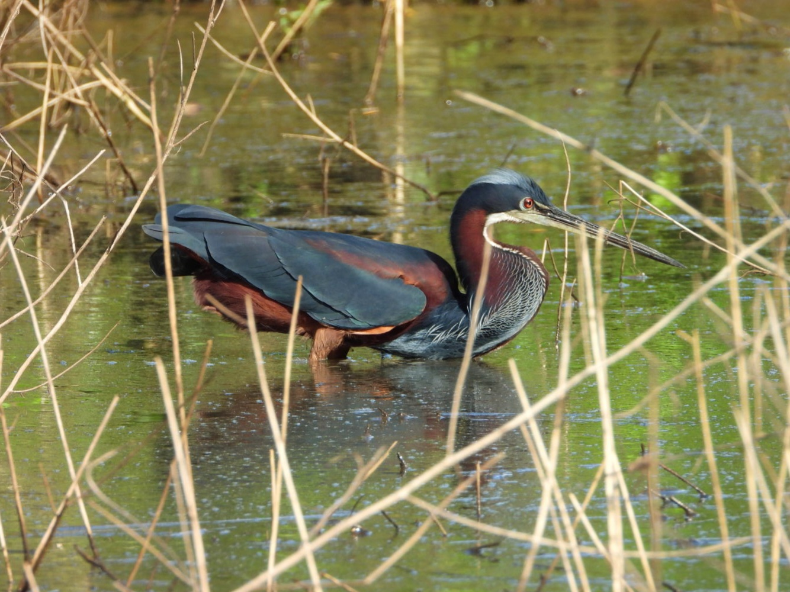
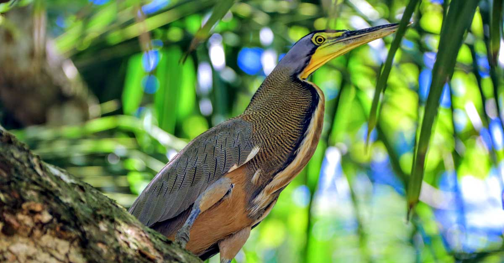
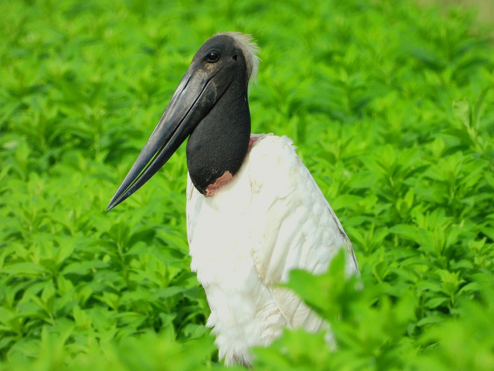
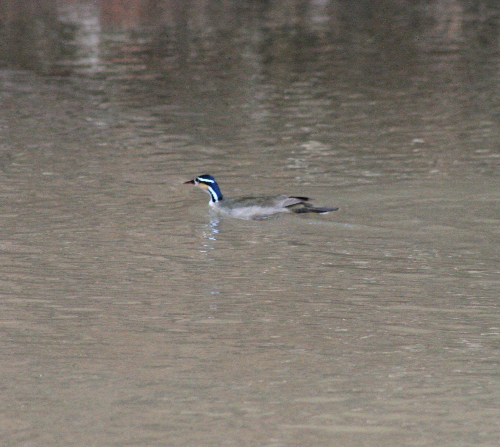
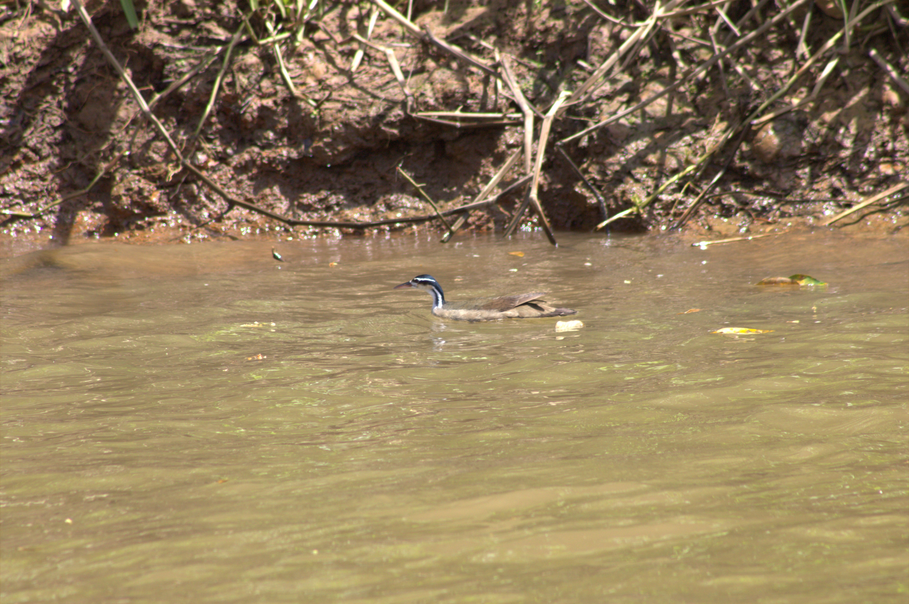
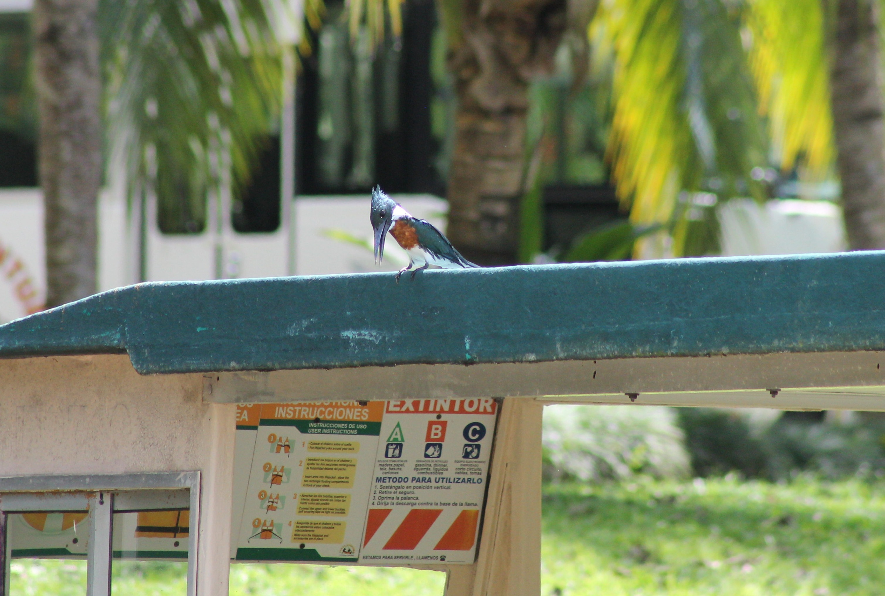
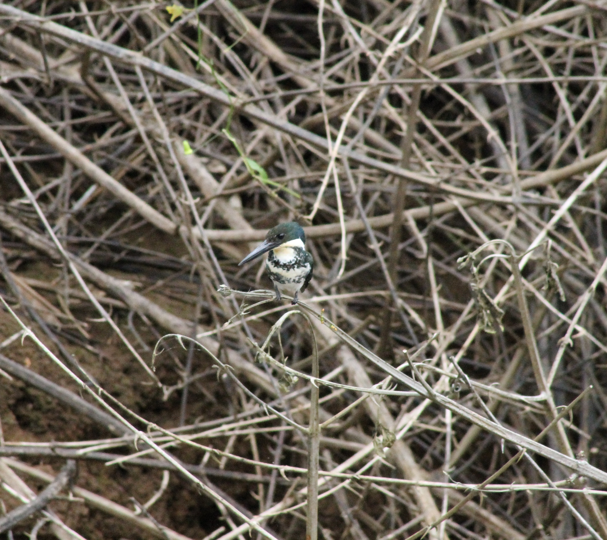

Avistamiento privilegiado
El refugio ofrece excelentes condiciones para observar aves durante distintas épocas del año.
Caño Negro es uno de los escenarios naturales más valiosos de Costa Rica para la observación de aves. Sus lagunas, bosques inundados, caños y playones brindan refugio, alimento y descanso a numerosas especies residentes y migratorias.
Cada una de estas aves refleja la riqueza ecológica de Caño Negro y el valor de conservar un humedal que sostiene vida, turismo responsable y biodiversidad.
El refugio ofrece excelentes condiciones para observar aves durante distintas épocas del año.
Lagunas, canales, bosques inundados y playones crean hábitats ideales para muchas especies.
Algunas aves permanecen todo el año y otras visitan el humedal en temporadas específicas.
La salud del humedal es clave para el descanso, la alimentación y reproducción de las aves.

Es una de las aves más llamativas del humedal por su elegancia, su silueta estilizada y la belleza de su plumaje.
Suele habitar sectores tranquilos con vegetación densa, donde encuentra refugio y condiciones ideales para alimentarse.
Su apariencia fina y su coloración distintiva la convierten en una de las favoritas para fotógrafos y observadores de aves.

Es una maestra del camuflaje gracias a su plumaje con finas franjas oscuras que imitan las texturas de la corteza y las sombras de los árboles.
A diferencia de otras garzas, es sumamente solitaria y paciente, permaneciendo inmóvil durante largos periodos en troncos caídos sobre el agua.
Su grito es un ronquido profundo y potente que se asemeja al rugido de un felino, lo que le da su nombre popular de "Garza Tigre".

El jabirú es una de las aves más impresionantes del humedal, destacando por su gran tamaño y porte majestuoso.
Su presencia está estrechamente ligada a la salud de los ecosistemas acuáticos donde encuentra alimento y amplios espacios para desplazarse.
Es una de las aves más grandes que pueden observarse en Caño Negro y una de las especies más buscadas por los visitantes.
Esta fascinante ave nocturna encuentra en los alrededores del Humedal Caño Negro un refugio ideal, ocultándose entre los yolillales y la vegetación densa que bordea el río Frío.
Es una especie emblemática de la zona, fácilmente reconocible por su pico excepcionalmente ancho, el cual utiliza para capturar peces y crustáceos en los canales tranquilos del humedal.
En Caño Negro, es común verlas durante los tours de bote compartiendo espacio con el Jabirú, aunque la Garza Cucharón prefiere las ramas más bajas y oscuras para pasar el día.
El ibis blanco es una de las aves acuáticas que puede observarse en los humedales y áreas abiertas de Caño Negro, donde encuentra alimento en orillas fangosas, lagunas poco profundas y sectores inundados.
Su presencia aporta dinamismo al paisaje del refugio, especialmente cuando recorre tranquilamente las riberas en busca de insectos, crustáceos y pequeños organismos propios del ecosistema.
En Caño Negro puede verse tanto de forma solitaria como en pequeños grupos, desplazándose con calma entre los humedales mientras explora el suelo con su largo pico curvado.
Esta ave acuática es conocida por su cuello largo y delgado, que sobresale del agua cuando nada, dándole una apariencia muy singular.
Habita lagunas y caños tranquilos, donde suele pescar y luego extender sus alas al sol después de sumergirse.
Cuando nada, a menudo solo se ve su cuello, por eso parece una serpiente deslizándose sobre el agua.

Es una de las aves más elegantes y reconocibles de los humedales costarricenses. Su plumaje blanco le da una presencia muy limpia y distinguida.
En Caño Negro puede observarse en lagunas, canales y sectores abiertos donde busca peces, insectos y otros pequeños organismos.
Es una de las especies que más fácilmente pueden verse durante los recorridos de observación en zonas acuáticas.



Es un ave acuática muy particular, con un cuello largo y elegante y rayas faciales blancas y negras muy llamativas. Prefiere ríos tranquilos y arroyos con vegetación densa en las orillas.
A diferencia de los patos comunes, no bucea a menudo, sino que se alimenta capturando insectos, arañas y pequeños peces de la superficie del agua o la vegetación colgante. Es un ave solitaria y difícil de observar.
Sus patas tienen dedos con lóbulos laterales (no completamente palmeados) y son de color amarillo con rayas negras.

Es una garza de gran tamaño y aspecto robusto, famosa por su plumaje finamente ondeado que recuerda las rayas de un tigre. Es una de las especies más emblemáticas de los humedales de Costa Rica.
A diferencia de otras garzas, suele ser solitaria y caza permaneciendo completamente inmóvil durante largos períodos, camuflándose entre la vegetación de las orillas hasta que su presa está cerca.
Los adultos presentan una zona de piel desnuda en la garganta de color amarillo verdoso brillante, la cual puede inflar cuando emite sus potentes llamados roncos.

Este es el más grande de los martines pescadores en Caño Negro. Es un verdadero gigante de los ríos, fácil de identificar por su cresta despeinada y su plumaje gris azulado con vientre canela.
En el río Frío, es común verlo perchado en ramas secas sobre el agua, vigilando con paciencia antes de lanzarse en un picado espectacular para capturar peces grandes.
Su grito suena como una "matraca" metálica muy fuerte; a menudo se le escucha antes de verlo volar a gran velocidad rozando la superficie del agua.


De tamaño mediano y color verde bronceado, este martín pescador es un habitante constante de los bordes de los canales y lagunas del Humedal Caño Negro.
Se distingue por su comportamiento territorial; suele vigilar el río Frío desde ramas bajas, siendo el macho fácilmente identificable por la banda ancha color castaño en su pecho.
A diferencia del Martín Pescador Grande, es muy común verlo perchado en estructuras humanas como muelles y botes, usándolos como puntos estratégicos para pescar.

Es el más pequeño de los martines pescadores que habitan el humedal. A pesar de su tamaño, su plumaje verde esmeralda oscuro es muy llamativo cuando logra salir de las sombras.
En Caño Negro, prefiere los caños estrechos y zonas de vegetación muy baja. Caza desde ramas que casi tocan el agua, lo que lo hace un experto en capturar presas en espacios reducidos.
A diferencia de sus parientes más grandes, es muy silencioso. Para anidar, excava túneles de casi un metro de profundidad en los barrancos de tierra a la orilla del río Frío.


La garza nocturna coroniamarilla es una especie frecuente en los humedales de Caño Negro, donde suele observarse perchada en ramas cercanas al agua o en zonas de vegetación densa.
Aunque es más activa al atardecer y durante la noche, en el refugio también puede verse durante el día, especialmente en ambientes tranquilos donde descansa y vigila su entorno.
En Caño Negro se alimenta principalmente de crustáceos, como cangrejos y camarones, los cuales captura con precisión gracias a su vista aguda y su comportamiento paciente.
La golondrina alirrasposa sureña es una especie activa y sociable que se observa con frecuencia en los cielos abiertos de Caño Negro, especialmente cerca de ríos, lagunas y zonas despejadas del humedal.
En el refugio, suele desplazarse en pequeños grupos, volando de forma ágil mientras captura insectos en el aire, siendo parte importante del equilibrio natural del ecosistema.
A diferencia de otras golondrinas, puede posarse con frecuencia en ramas expuestas, desde donde descansa antes de volver a volar para continuar cazando insectos.
Descubre la riqueza de las aves de Caño Negro, un humedal lleno de vida, donde cada especie refleja la importancia de conservar nuestro entorno natural.
Se ubica en Los Chiles, Alajuela, Costa Rica, cerca de la frontera con Nicaragua.
Puedes acceder por la Ruta 138 desde Upala o Los Chiles. Usa el botón de ubicación para ver la ruta.
Más de 300 especies de aves, además de reptiles, mamíferos y una gran diversidad de flora.
Durante la estación seca para senderismo, o época lluviosa para ver aves migratorias.
Ropa cómoda, repelente, agua, cámara y protección solar.
Cambiando idioma...